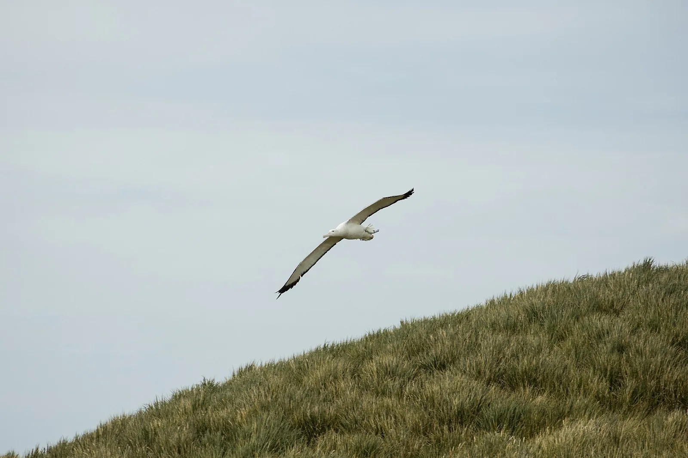
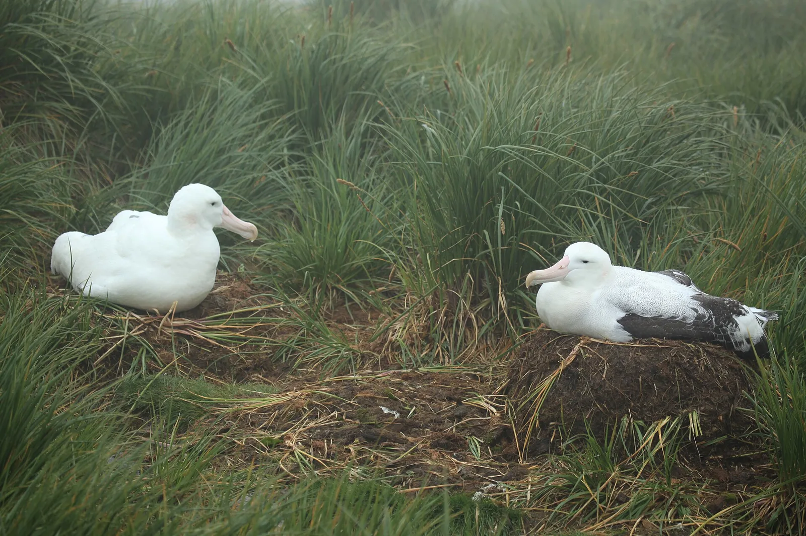

S2 · Sur
S2 · Süden
S2 · South
Islas Georgias del Sur
Sobre el mar más frío de la Tierra vi planear al albatros errante que me contó que hacía 5 años que no tocaba la tierra.
Über dem kältesten Meer der Erde sah ich den Wanderalbatros segeln, der mir erzählte, dass er seit fünf Jahren keine Erde mehr berührt hatte.
Over the coldest sea on Earth I saw the wandering albatross gliding, and it told me it had not touched land in five years.
Información
El albatros errante tiene la mayor envergadura de todas las aves vivas y pasa casi toda su vida planeando sobre el océano Austral. Los jóvenes se van al mar y pueden tardar años en volver a pisar tierra, hasta que regresan a criar a las islas donde nacieron. En las Georgias del Sur anidan en Prion Island y en Bird Island.
La Unión Internacional para la Conservación de la Naturaleza lo clasifica como vulnerable. La población de las Georgias del Sur viene en caída sostenida: de 1.553 parejas reproductoras en 2003-2004 pasó a unas 1.278 en 2014-2015, un 18 % menos en poco más de una década.
Information
El albatros errante tiene la mayor envergadura de todas las aves vivas y pasa casi toda su vida planeando sobre el océano Austral. Los jóvenes se van al mar y pueden tardar años en volver a pisar tierra, hasta que regresan a criar a las islas donde nacieron. En las Georgias del Sur anidan en Prion Island y en Bird Island.
La Unión Internacional para la Conservación de la Naturaleza lo clasifica como vulnerable. La población de las Georgias del Sur viene en caída sostenida: de 1.553 parejas reproductoras en 2003-2004 pasó a unas 1.278 en 2014-2015, un 18 % menos en poco más de una década.
Information
El albatros errante tiene la mayor envergadura de todas las aves vivas y pasa casi toda su vida planeando sobre el océano Austral. Los jóvenes se van al mar y pueden tardar años en volver a pisar tierra, hasta que regresan a criar a las islas donde nacieron. En las Georgias del Sur anidan en Prion Island y en Bird Island.
La Unión Internacional para la Conservación de la Naturaleza lo clasifica como vulnerable. La población de las Georgias del Sur viene en caída sostenida: de 1.553 parejas reproductoras en 2003-2004 pasó a unas 1.278 en 2014-2015, un 18 % menos en poco más de una década.
Vi al albatros, el que no tocaba tierra, tragarse el anzuelo de un barco y hundirse con él. […] Vi el mar, que siempre fue de los más fríos, entibiarse como una fiebre que no baja.
Ich sah den Albatros, den, der keine Erde berührte, den Haken eines Schiffes schlucken und mit ihm versinken. […] Ich sah das Meer, das immer eines der kältesten war, lauwarm werden wie ein Fieber, das nicht sinkt.
I saw the albatross, the one that never touched land, swallow a ship's hook and sink with it. […] I saw the sea, which was always among the coldest, grow warm like a fever that will not break.
La principal causa de la caída del albatros errante es la pesca. Al recorrer distancias enormes, las aves se cruzan con flotas de muchos países; cuando intentan comer la carnada de los palangres quedan enganchadas en el anzuelo y se ahogan arrastradas por la línea. La supervivencia de los adultos empezó a caer con la expansión de los palangres a fines de los años noventa.
En las Georgias del Sur la población viene bajando alrededor de un 4,8 % por año desde 1996.
La principal causa de la caída del albatros errante es la pesca. Al recorrer distancias enormes, las aves se cruzan con flotas de muchos países; cuando intentan comer la carnada de los palangres quedan enganchadas en el anzuelo y se ahogan arrastradas por la línea. La supervivencia de los adultos empezó a caer con la expansión de los palangres a fines de los años noventa.
En las Georgias del Sur la población viene bajando alrededor de un 4,8 % por año desde 1996.
La principal causa de la caída del albatros errante es la pesca. Al recorrer distancias enormes, las aves se cruzan con flotas de muchos países; cuando intentan comer la carnada de los palangres quedan enganchadas en el anzuelo y se ahogan arrastradas por la línea. La supervivencia de los adultos empezó a caer con la expansión de los palangres a fines de los años noventa.
En las Georgias del Sur la población viene bajando alrededor de un 4,8 % por año desde 1996.
Galería
Galerie
Gallery


Fuentes
Quellen
Sources
- BirdLife International, Fishing vessels pose a high risk to South Georgia's Wandering Albatrosses — https://datazone.birdlife.org/articles/fishing-vessels-pose-a-high-risk-to-south-georgias-wandering-albatrosses consultado 2026-10-05abgerufen 2026-10-05accessed 2026-10-05
- British Antarctic Survey, Recent trends in numbers of wandering, black-browed and grey-headed albatrosses breeding at South Georgia — https://www.bas.ac.uk/data/our-data/publication/recent-trends-in-numbers-of-wandering-diomedea-exulans-black-browed-thalassarche-melanophris-and-grey-headed-t-chrysostoma-albatrosses-breeding-at-south-georgia/ consultado 2026-10-05abgerufen 2026-10-05accessed 2026-10-05